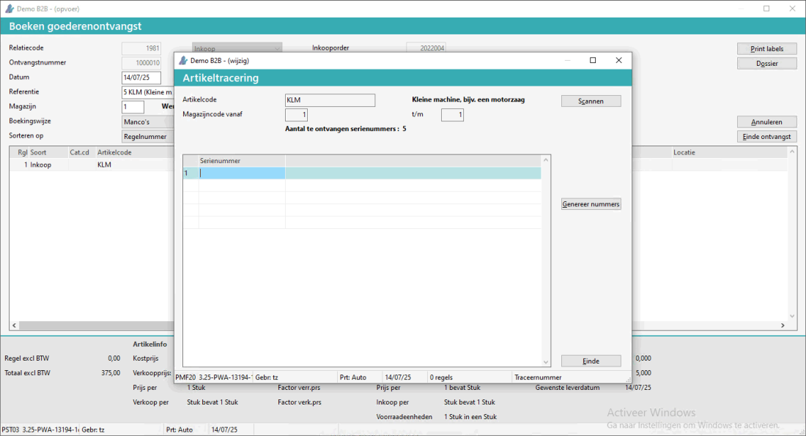
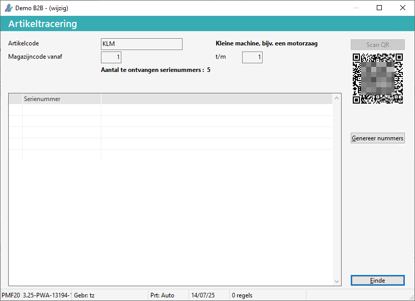
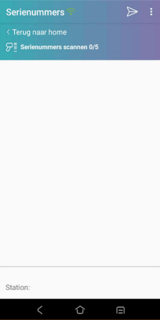
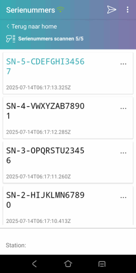
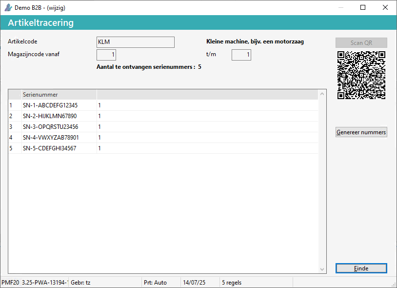

Om de serienummers in te boeken bij Boeken goederenontvangst (AVO), doorloopt u de volgende stappen:
-
Kies voor de knop Scannen, bij het scherm Artikeltracering:

De QR-code verschijnt.
-
Scan met de Barcode app / de QR-code.

-
M.b.v. de barcode scanner kunnen de serienummers gescand worden.
Het scherm Serienummers verschijnt.

Scan de serienummers:
-
Druk op 'verzenden' .
De gegevens worden naar Powerall gezonden en direct verwerkt.
-
De gescande serienummers verschijnen.

-
Kies voor de knop Einde
De gegevens zijn opgeslagen. / SN's zijn op voorraad.
Opmerking: Als er bijv. maar 4 gescand kunnen worden, verschijnt er een melding dat er ook zoveel SN's opgeboekt worden, de andere kunnen later opgeboekt / toegevoegd worden.